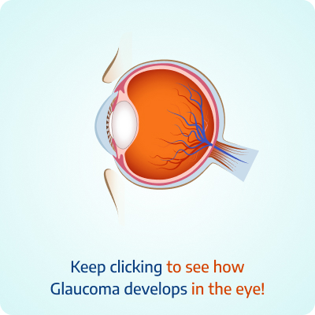
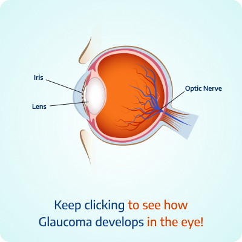
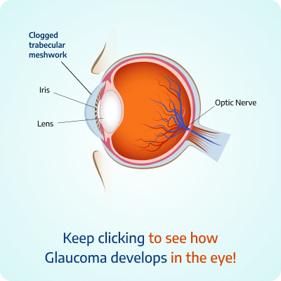
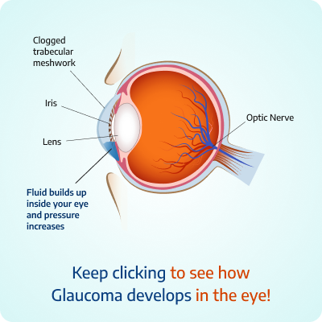
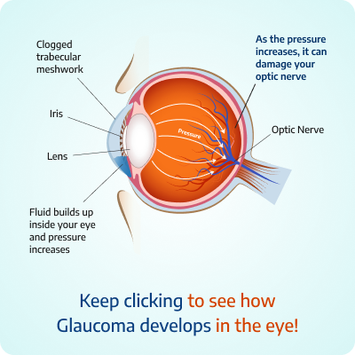
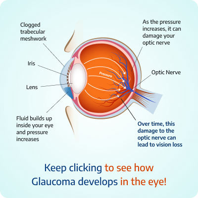

Eye drops reduces the production of fluids itself, thereby helping in lowering eye pressure. Eye drops could have some side effects that the doctor would inform you about. Inform your doctor about current medications and allergies if you are asked to take eye drops.
Why wait for Glaucoma
warning signs?
Book Free Consultation Today
What is Glaucoma?
Glaucoma is a set of eye conditions that damages the optic nerve. The optic nerve is located at the back of the eye, and it transmits visual signals from the eye to the brain helping in visualization. Damage to the optic nerve could result in blindness.






Types of Glaucoma
Closed-Angle Glaucoma
Closed-angle glaucoma refers to a condition where the pressure inside the eyes becomes a lot higher than usual. The pressure gets built up because the fluid is not able to flow out as it should.
Open-Angle Glaucoma
Open-angle glaucoma is the most common form of glaucoma, resulting from a slow, gradual increase in eye pressure. This may lead to blindness if left untreated.
Types of Glaucoma
Closed-Angle Glaucoma
Closed-angle glaucoma refers to a condition where the pressure inside the eyes becomes a lot higher than usual. The pressure gets built up because the fluid is not able to flow out as it should.
Open-Angle Glaucoma
Open-angle glaucoma is the most common form of glaucoma, resulting from a slow, gradual increase in eye pressure. This may lead to blindness if left untreated.
Glaucoma Symptoms
Loss of vison
Blurry vision
Early presbyopia
Pain in the eye
Presistent headache
Eye redness
Stomach upset, nausea and vomiting
Treatments Provided by Dr Agarwals
Depending on the type of glaucoma, the doctor may treat it using the following methods or even a combination of the methods.
Eye Drops and Oral Medication
Eye Drops and Oral Medication
Laser Surgery
Laser Surgery
In the case of open-angle glaucoma, laser surgery would help in increasing the fluid flow. In the case of closed-angle glaucoma, the fluid blockage would be stopped by procedures such as Trabeculoplasty (Opening of the drainage area), Iridotomy (Making a small opening in the iris..
Microsugery
Microsugery
In microsurgery, to reduce eye pressure, the doctor creates a new channel to ease the flow of the fluid. Even though glaucoma is not completely curable, it could be controlled, and complete vision loss could be prevented. You could treat it before it worsens.
Treatments Provided by Dr Agarwals
Depending on the type of glaucoma, the doctor may treat it using the following methods or even a combination of the methods.
Eye Drops and Oral Medication
Eye Drops and Oral Medication
Eye drops reduces the production of fluids itself, thereby helping in lowering eye pressure. Eye drops could have some side effects that the doctor would inform you about. Inform your doctor about current medications and allergies if you are asked to take eye drops.
Eye Drops and Oral Medication
Eye drops reduces the production of fluids itself, thereby helping in lowering eye pressure. Eye drops could have some side effects that the doctor would inform you about. Inform your doctor about current medications and allergies if you are asked to take eye drops.
Laser Surgery
Laser Surgery
In the case of open-angle glaucoma, laser surgery would help in increasing the fluid flow. In the case of closed-angle glaucoma, the fluid blockage would be stopped by procedures such as Trabeculoplasty (Opening of the drainage area), Iridotomy (Making a small opening in the iris to facilitate free-flowing of fluid) and Cyclophotocoagulation (Making the fluid production lesser)
Microsugery
Eye drops reduces the production of fluids itself, thereby helping in lowering eye pressure. Eye drops could have some side effects that the doctor would inform you about. Inform your doctor about current medications and allergies if you are asked to take eye drops.
Microsugery
Microsugery
In microsurgery, to reduce eye pressure, the doctor creates a new channel to ease the flow of the fluid. Even though glaucoma is not completely curable, it could be controlled, and complete vision loss could be prevented. You could treat it before it worsens.
Microsugery
Eye drops reduces the production of fluids itself, thereby helping in lowering eye pressure. Eye drops could have some side effects that the doctor would inform you about. Inform your doctor about current medications and allergies if you are asked to take eye drops.

Testimonial
Watch as our patient speaks about her journey.
Frequently Asked Questions
How common is glaucoma disease?
Glaucoma is a common eye disease that leads to damage to the optic nerve. This damage to the optic nerve, which transmits information from the eyes to the brain, results in vision loss. If not treated properly, visual loss may be temporary or permanent. A change in the eye’s internal fluid pressure, also known as intraocular pressure (IOP), is the most common cause of Glaucoma.
use of irreversible blindness, accounting for 12.3% of all blindness worldwide.
What is the difference between open-angle and closed-angle glaucoma?
Open-angle glaucoma: The most prevalent type of glaucoma is open-angle glaucoma. It has no symptoms at first; however, side (peripheral) vision is lost at some time, and without treatment, a person can become completely blind.
Closed-angle glaucoma: Angle-closure glaucoma, also known as closed-angle glaucoma, is a less prevalent kind of glaucoma. It happens when the drainage system in the eye gets fully obstructed, causing the pressure inside the eye to rapidly rise.
Can hereditary be one of glaucoma’s causes?
Glaucoma can be inherited in some cases, and many experts around the world are researching genes and their effects on the disease. Glaucoma is not always hereditary, and the circumstances that lead to the beginning of the illness are yet to be fully understood.
What is normal intraocular pressure?
The measurement of eye pressure is in millimetres of mercury (mm Hg). The typical range for eye pressure is 12-22 mm Hg, while pressures more than 22 mm Hg is considered abnormal. Glaucoma is not caused by high eye pressure alone. It is, nonetheless, a considerable risk factor. Individuals with high eye pressure should get comprehensive eye exams by an eye care specialist on a regular basis to screen for signs of glaucoma
Is there a cure for glaucoma?
Unfortunately, there is no glaucoma cure, and the vision loss resulted due to it is irreversible. If someone suffers from open-angle glaucoma, it has to be monitored for the rest of their life.
However, it is possible to slow down or stop additional vision loss using medication, laser treatment, and surgery. The most important thing to remember here is that the first step in preserving your vision is to get a diagnosis. So, never ignore it if you experience any discomfort in your vision.
What's the difference between glaucoma and ocular hypertension?
When the classic optic nerve and vision alterations occur, glaucoma disease is diagnosed, usually with raised eye pressure but rarely with normal pressure. Ocular hypertension occurs when the intraocular pressure is higher than usual, but the person does not display indications of glaucoma.
What does ‘tunnel vision’ mean?
If not treated adequately in the early stages of glaucoma disease, it can severely affect peripheral vision, leading to a condition known as ‘tunnel vision’. Tunnel vision eliminates your ‘side vision,’ limiting your field of view to images in your central vision or straight ahead.
How does glaucoma disease get diagnosed?
If you feel that you are experiencing any glaucoma symptoms, it can be detected during a fully dilated eye examination. The examination is straightforward and painless: your doctor will dilate (widen) your pupil with eye drops before checking your eyes for glaucoma and other eye issues.
A visual field test is included in the exam to examine your side vision. People with a family history of glaucoma should have their eye pressure and optic nerves tested frequently since they are at a higher risk of developing the condition.
Read more about Glaucoma Treatments

Read more about
Glaucoma Treatments
Glaucoma Treatments